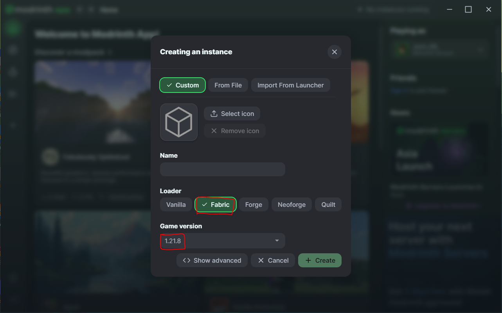
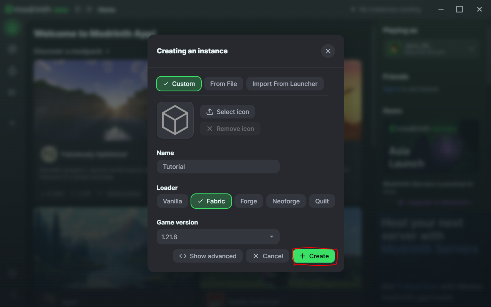
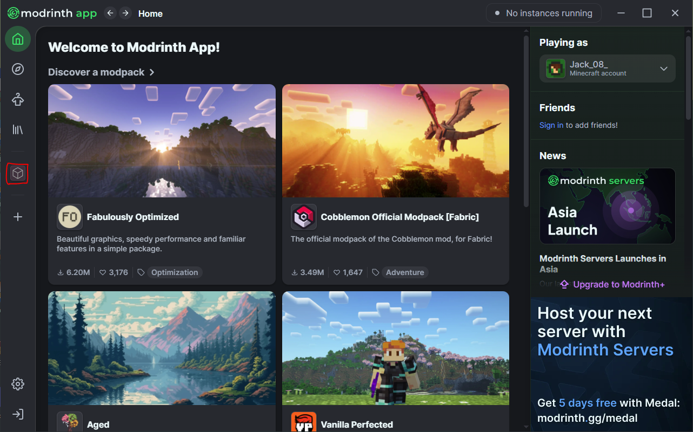
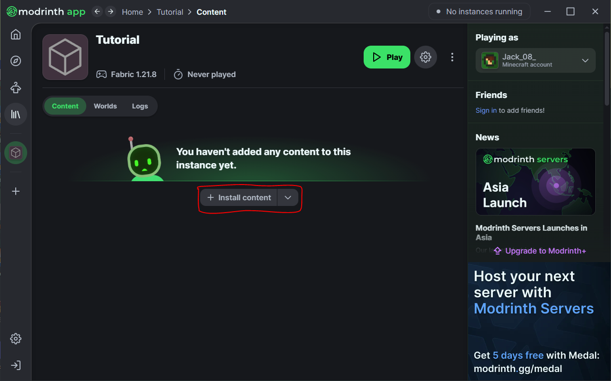
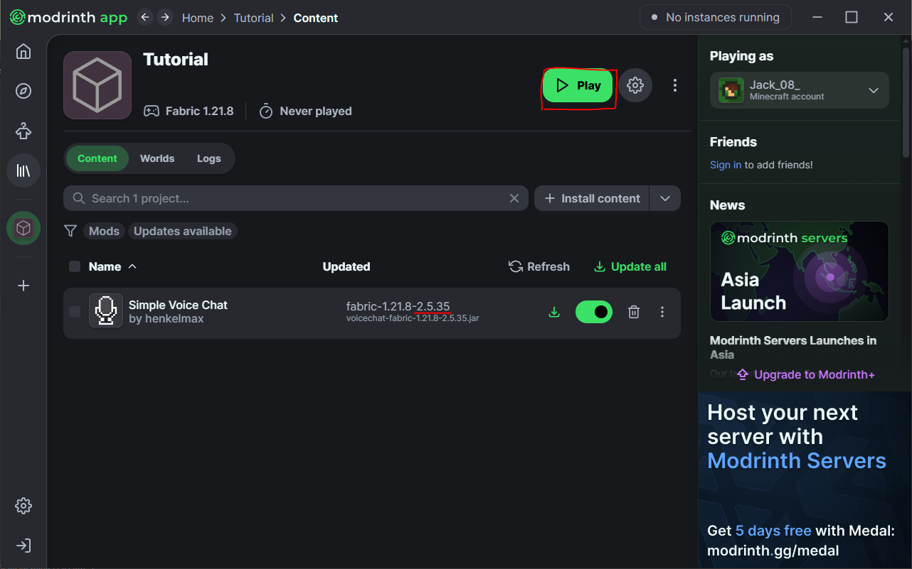

1. Gehe auf die offizielle Seite:link
2. Klicke auf "Download modrinth app" oder diesen Link: Only for Windows
3. Gehe den Installer durch und melde dich mit deinem Microsoft Konto (Minecraft account) an
4. klicke auf das "+" links in der leiste und vergebe einen Namen für die neue Installation
5. Wähle bei "Loader" fabric aus und bei der Version 1.21.8

6. Klicke auf erstellen und lasse es installieren

7. Wähle das erstellte Profil aus, indem du es anklickst

8. Klicke auf "install content" und suche nach "simple voice chat" (nicht auf installieren klicken)

9. klicke auf das Icon oder den Namen der Mod und navigiere zu Versionen, dort scrollst du nach unten bis du den release 2.5.35 siehst (die einzige Version, die ein grünes Logo hat) klicke bei dieser auf den Installieren-Button.
10. gehe zurück auf die erstelle Instanz und klicke auf Play

11. wenn Minecraft gestartet ist, füge den Server "mc.wildnis-online.com" hinzu, und trete bei.
Bitte nutze Modrinth, da Curesforge Sicherheitslücken beinhaltet
Bitte nutze Modrinth, da es einfach besser ist...